Settlers 4 HD Patch
Welcome to the Settlers 4 HD Patch page!
This project aims to upscale every texture in Settlers 4 to HD using AI technology
| Table of Contents: |
|---|
| Screenshots |
| New Features |
| Download & Requirements |
| Credits |
Screenshots:
Before:
After:
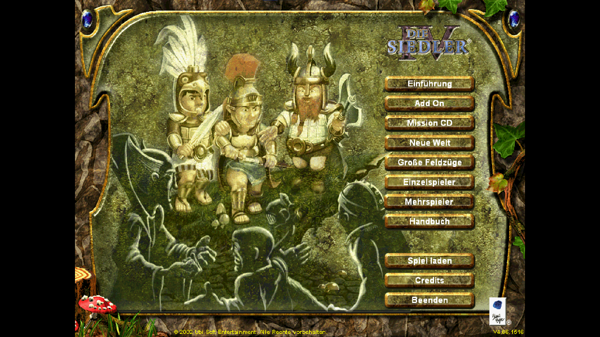
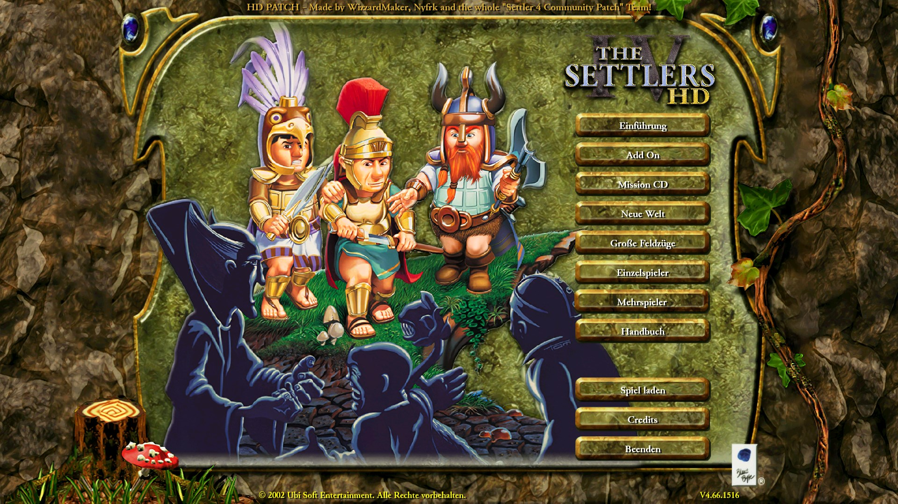
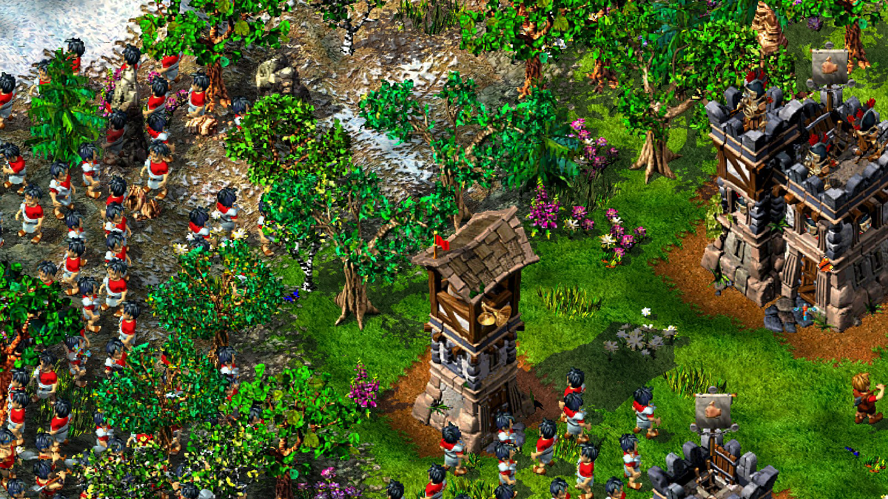
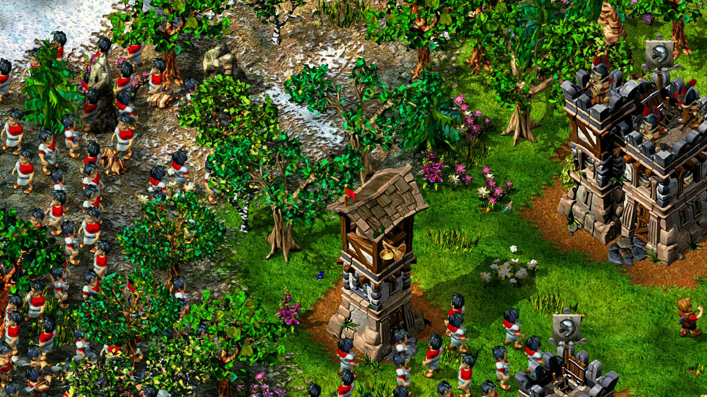
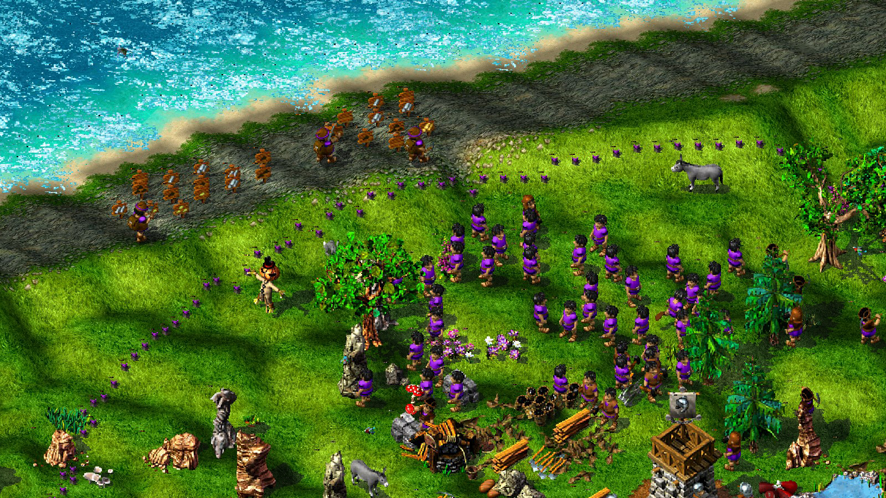
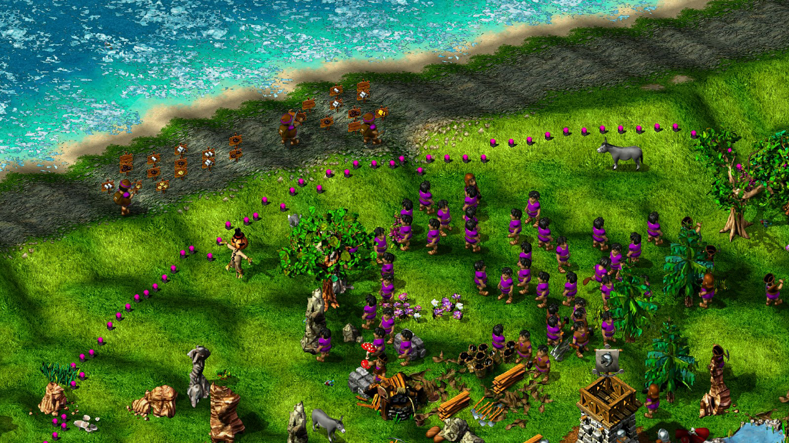
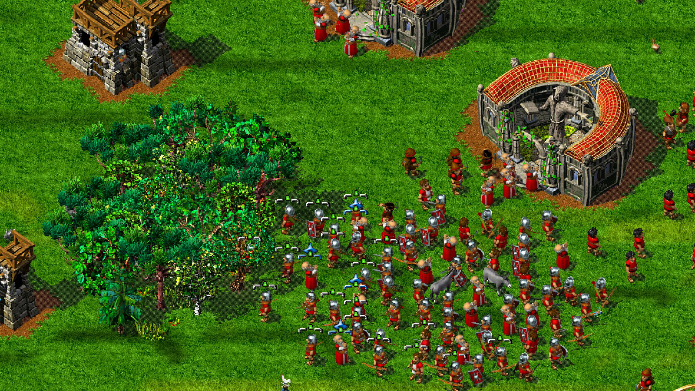
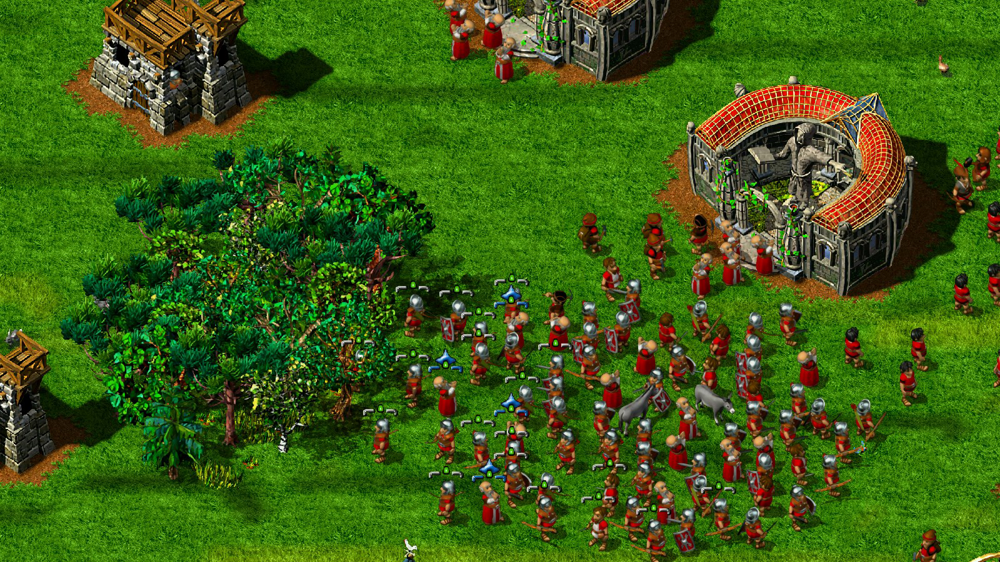
New Features:
The HD Patch comes with a few (optional) quality of life features, that will help newcomers and improve readability
Custom UI Themes (per tribe setting):
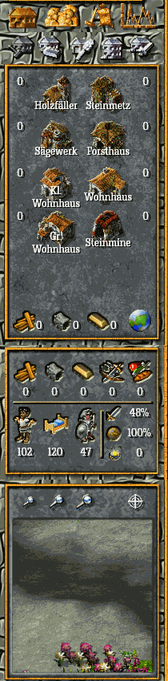
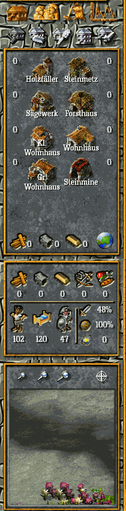
Custom font support:
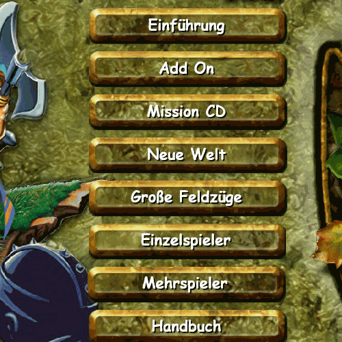
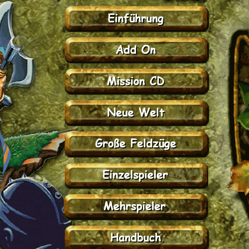
Custom team color* support:
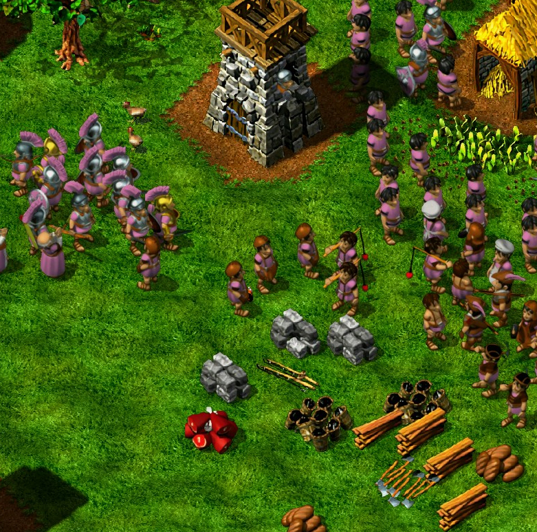
*(local only)
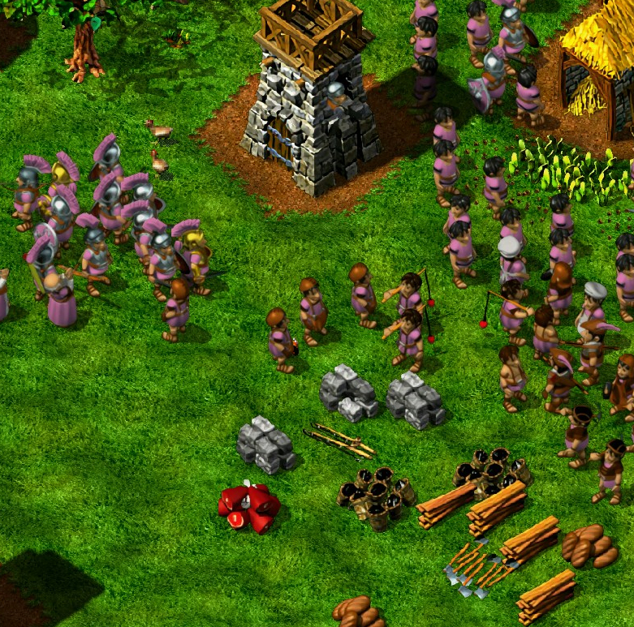
*(local only)
Full color custom cursor:
Labels for new buildings in the menu:
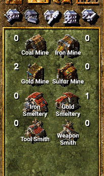
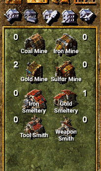
Download & Requirements
This HD Patch comes in various flavours:
- 4x texture upscaling
- All textures have a 4x resolution increase
This can cause a performance hit, if your hardware is not powerful enough
- All textures have a 4x resolution increase
- 2x texture upscaling
- All textures have a 2x resolution increase
- HD Menu only
- This version only has the wide screen menu
The following PC specs are recommended but not necessarily mandatory:
- OS: Windows 64bit
- Free Hard Drive Space: 2 GB
- GPU: Anything with more than 1GB VRAM
- CPU: AMD FX-6300
- RAM: More than 4GB
Credits
The Settlers 4 HD Patch would not be possible without these people:
- WizzardMaker
Lead Developer of this Patch - Cydra
DirectX 11 Graphics Engineer of this Patch - nyfrk
His Mod API and help laid the foundation this patch rests on - The Settler 4 Community Patch
Team
They helped with beta testing and motivating - check out the S4 Community Patch here! - Thanks to all beta tester that helped me remove all bugs